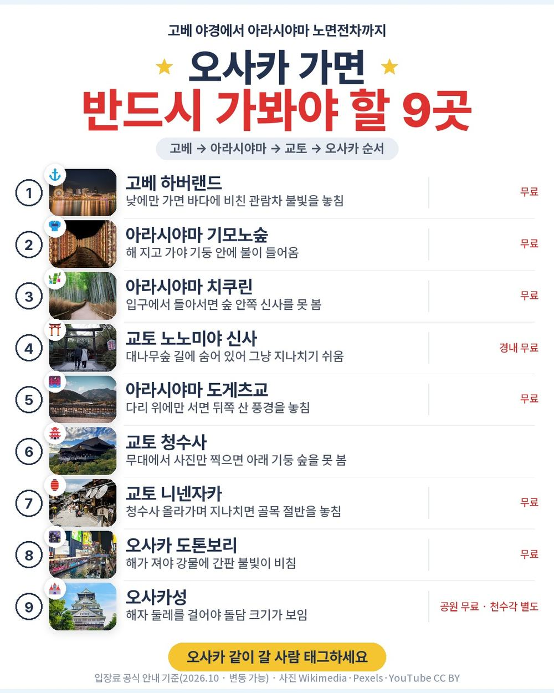
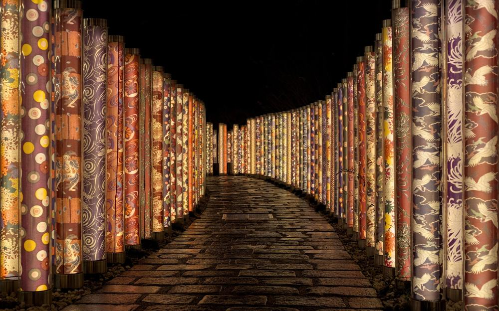
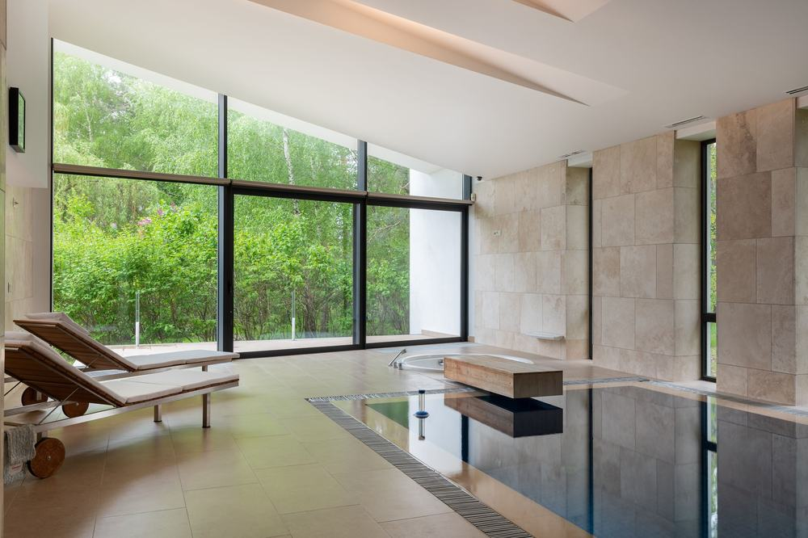
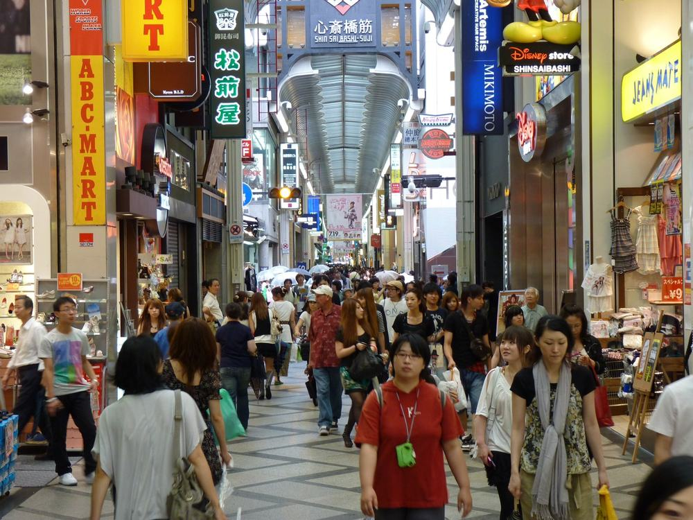
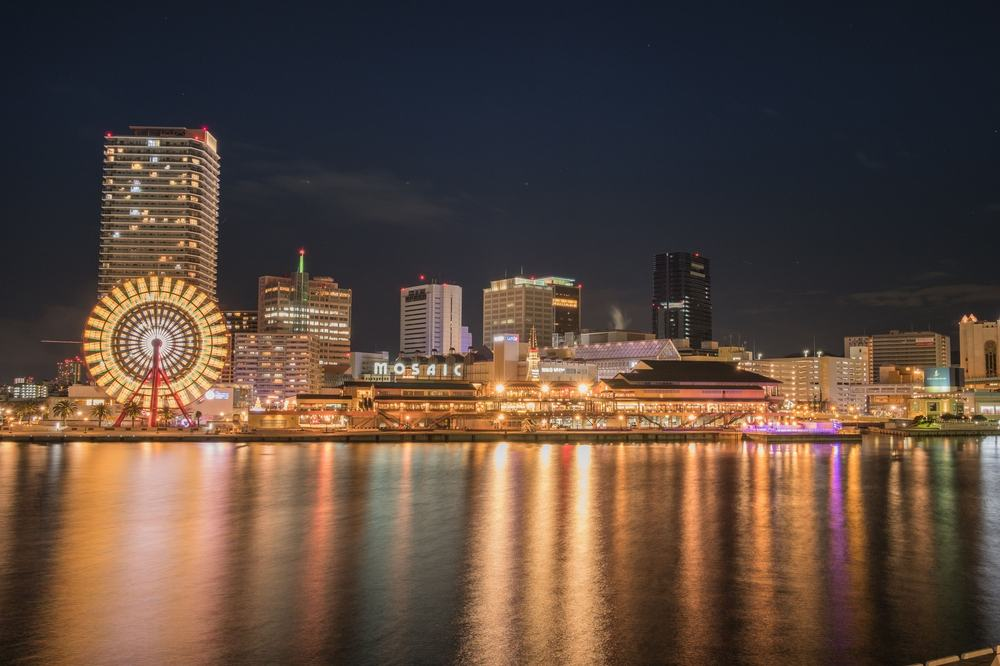
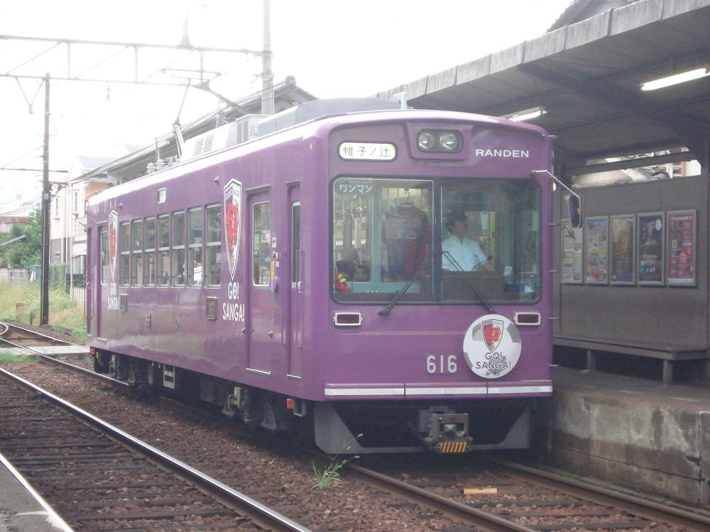
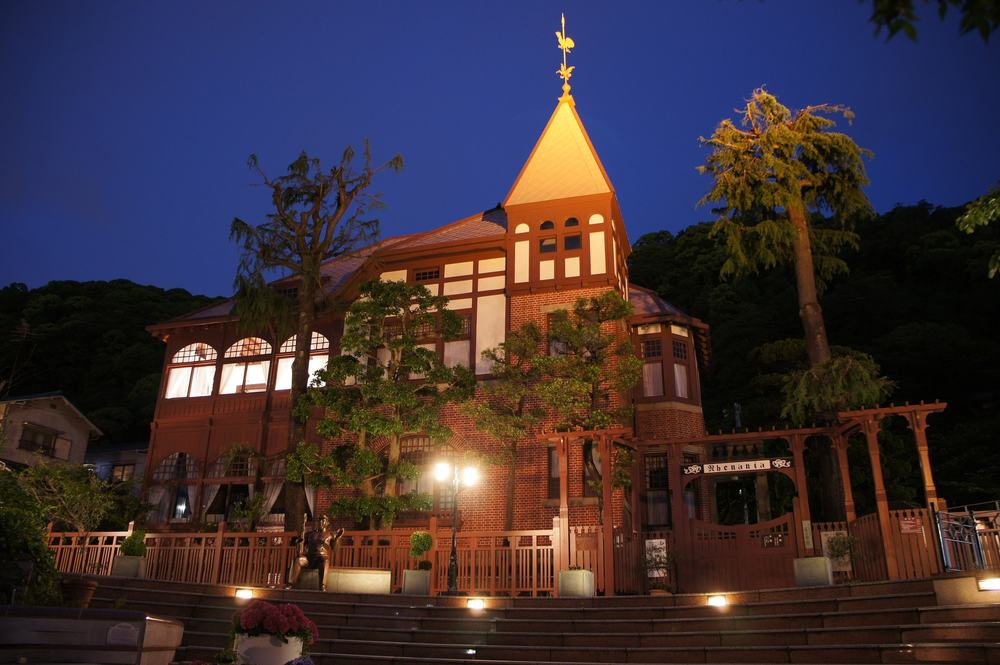
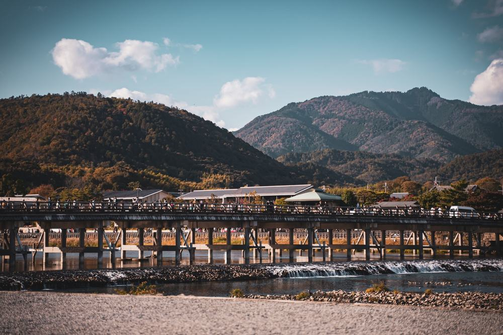

교원투어 오사카 패키지 여행 79만 9천원, 추가금 진짜 없을까?

오사카 2박 3일을 알아보는데 상품마다 새벽 비행기가 걸렸음. 새벽 4시에 일어나 공항 가면 첫날은 그냥 버티는 날이 됨.
그러다 교원투어 여행이지 상품이 눈에 들어옴. 공항 미팅이 오전 10시 30분이고 낮 비행기로 고베에 내림. 게다가 호텔 두 곳이 다 꼭대기 층에 천연온천이 있는 도미인임.
결론 — 추천. 낮 비행기에 관광 10곳 입장료 포함, 두 밤 다 온천 호텔. 다만 침대를 따로 써야 하는 두 분(트윈 룸당 10만원), 오사카성 천수각 안까지 보고 싶은 분, 자유시간을 길게 원하는 분은 아님.
79만 9천원에 실제로 뭐가 들어 있고 현지에서 얼마가 더 나가는지 원문을 뜯어봤음.
| 항목 | 내용 |
|---|---|
| 가격 | 1인 799,000원 (2인 1실 더블 기준 · 10월 출발) |
| 여행사 | 교원투어 여행이지 |
| 항공 | 제주항공 직항 · 인천 낮 출발 → 고베 오후 도착 / 고베 오후 출발 → 인천 저녁 도착 |
| 숙소 | 도미인 고베 모토마치 1박 + 오사카 도미인 타니마치 1박 (꼭대기 층 천연온천) |
| 일정 | 2박 3일 · 전용 버스 · 가이드 · 식사 6회 |
| 가는 곳 | 고베 하버랜드 야경 · 아라시야마 란덴·기모노숲·치쿠린·도게츠교 · 교토 청수사 · 도톤보리 · 오사카성 · 기타노이진칸 |
▶ 내 출발일 오늘 기준 요금 확인 (제휴 링크 · 예약 시 수수료를 받으며 가격은 같습니다)
▶ 10월 9일 기준 오사카 패키지 최저 63만 9,900원부터 — 출발일별 값 한 화면에: 비교 페이지
| 순서 | 다루는 것 | 한 줄 결론 |
|---|---|---|
| 1 | 구성 뜯어보기 | 입장료 10곳·온천 호텔 포함, 현지 경비 3,000엔 |
| 2 | 일정 살펴보기 | 걷는 것과 버스가 2일차에 몰려 있음 |
| 3 | 자유여행 VS 패키지 | 직접 짜면 54만원 | 그 차이로 이동·가이드·입장을 통째로 맡김 |
1. 구성 뜯어보기
요약 — 항공·온천 호텔 2박·식사 6회·관광 10곳 입장료·전용 버스·여행자보험이 들어 있음. 현지에서 반드시 내는 돈은 가이드 경비 1인 3,000엔이고, 쇼핑 1회, 선택관광은 없음.
1-1. 79만 9천원에 들어 있는 것

포함 항목을 정리하면 이럼.
- 왕복 항공권 + 유류할증료 + 세금
- 도미인 호텔 2박 (2인 1실 더블)
- 식사 6회 — 호텔 조식, 유두부 정식, 월드뷔페, 1,000엔 주는 자유식 포함
- 관광 10곳 입장료 — 란덴 노면전차 탑승까지
- 전용 버스 · 여행자보험
가장 눈에 띄는 건 아라시야마에서 노면전차 란덴을 실제로 탄다는 것임. 편도 약 20분이고, 내리는 역 옆이 기모노숲임.
출발일별 요금 확인하기
https://naver.me/FKGRlf2B
1-2. 호텔 두 곳이 이 상품의 핵심임

첫날은 도미인 고베 모토마치, 둘째 날은 오사카 도미인 타니마치임. 고베 쪽은 14층 '로만유'에 노천탕까지 있고, 오사카 쪽은 13층 '나니와노유'임.
밤이 좋음. 밤 9시 반부터 11시까지 간장 국물 요나키 소바가 무료이고, 목욕 뒤엔 아이스크림도 있음. 호텔 사정으로 메뉴·시간은 바뀔 수 있다고 적혀 있음.
한 가지는 알고 가야 함. 기본 방이 침대 하나인 더블룸이고 3인 1실은 안 됨. 트윈으로 바꾸면 룸당 10만원이 붙음.
1-3. 쇼핑과 선택관광

쇼핑은 1회, 시내 면세점 약 1시간임. 사는 건 자유.
선택관광은 없음. 일정표에 적힌 곳이 전부이고 그 입장료가 상품가에 들어 있음.
1-4. 현장에서 더 낼 돈
| 항목 | 금액 | 비고 |
|---|---|---|
| 가이드·기사 경비 | 약 60,000원 | 1인 3,000엔 × 2 · 현지 지불 |
| 2일차 저녁 | 약 40,000원 | 불포함 끼니 · 도톤보리 자유식 (추정) |
| 선택관광 | 0원 | 없음 |
| 트윈으로 바꾸면 | 100,000원 | 룸당 · 더블이면 0원 |
| 합계 (2인) | 약 100,000원 | 상품가 159만 8천원 + 10만원 = 약 170만원 (트윈이면 180만원) |
한 사람으로 치면 약 85만원임.
1절 자주 나오는 질문
Q. 가이드 경비는 따로 내나요?
A. 냄. 1인 3,000엔을 현지에서 냄. 성인·소아 같은 금액이고 상품가 밖임.
Q. 출발이 확정된 상품인가요?
A. 상품명에는 "출발확정"이 붙어 있지만 원문 출발 상태는 확정이 아님. 최소 15명이 모여야 떠나는 상품이라 예약할 때 물어보는 게 좋음.
Q. 오사카성 천수각 안에도 들어가나요?
A. 안 들어감. 일정표에 "천수각 불포함"이라고 적혀 있음. 성 둘레 공원을 걷는 일정임.
2. 일정 살펴보기
요약 — 1일차 고베 야경, 2일차 아라시야마·청수사·도톤보리, 3일차 오사카성·기타노이진칸 뒤 오후 귀국. 버스와 걷기가 2일차에 몰려 있음.
2-1. 하루하루 어디를 가나

| 일차 | 가는 곳 | 식사 | 숙소 |
|---|---|---|---|
| DAY 1 | 10:30 인천공항 미팅 → 낮 출발 → 고베공항 → 하버랜드·고베항 야경 | 석 포함 | 도미인 고베 모토마치 |
| DAY 2 | 아라시야마(란덴·기모노숲·치쿠린·도게츠교·노노미야 신사) → 교토 청수사·니넨자카·산넨자카 → 도톤보리·신사이바시 | 조 호텔식 · 중 포함 · 석 불포함 | 오사카 도미인 타니마치 |
| DAY 3 | 면세점 → 오사카성(천수각 불포함) → 고베 기타노이진칸 → 오후 고베 출발 → 저녁 인천 | 조 호텔식 · 중 포함 | — |
| 일차 | 버스 이동 | 걷기 | 포함 식사 |
|---|---|---|---|
| DAY 1 | 약 0.7시간 | 적음 | 석 포함 |
| DAY 2 | 약 3.5시간 | 많음 | 조 호텔식 · 중 포함 · 석 불포함 |
| DAY 3 | 약 2시간 | 보통 | 조 호텔식 · 중 포함 |
| 합계 | 약 6.2시간 | - | 상품 표기 6회 (호텔 조식 · 유두부 정식 · 월드뷔페 · 1,000엔 자유식) |
요약 — 버스 이동은 3일 동안 약 6.2시간이고, 그중 3.5시간이 DAY 2임. 가장 많이 걷는 날도 DAY 2임.
2-2. 첫날은 고베 야경

낮 비행기로 오후에 고베공항에 내림. 공항이 바다 위 인공섬이라 시내까지 금방임.
하버랜드 모자이크 앞 바다에서 고베항 야경을 보고 고베 시내 호텔로 들어감. 첫날 밤부터 온천과 소바가 기다림.
2-3. 2일차가 제일 바쁜 날

고베에서 아라시야마까지 버스로 1시간 40분쯤 감. 란덴을 20분쯤 타고 기모노숲에 내린 뒤, 대나무숲 치쿠린과 노노미야 신사, 강 위 154m 나무다리 도게츠교를 걸음. 여기까지는 평지임.
오후엔 교토 청수사. 778년에 세워진 세계유산 사찰임. 내려오는 니넨자카·산넨자카가 돌계단 골목이라 이날 다리가 제일 바쁨. 길이 막히면 입구까지 15~20분 걸어 올라갈 수 있다고 적혀 있음.
저녁은 오사카 도톤보리. 이 끼니만 상품에 없어서 타코야키든 오코노미야키든 골라 먹으면 됨.
2-4. 3일차는 오사카성과 기타노이진칸

아침에 면세점을 1시간쯤 들른 뒤 오사카성 공원을 걸음. 1583년 도요토미 히데요시가 세운 성이고, 천수각 안은 안 들어감.
그다음 고베로 50분 이동해 기타노이진칸을 봄. 19세기 말 외국인 거류지였던 언덕길이라 서양식 저택과 카페가 이어짐. 오후 비행기로 저녁에 인천 도착.
2절 자주 나오는 질문
Q. 많이 걷나요?
A. 2일차가 제일 많음. 청수사 오르막과 니넨자카·산넨자카 돌계단이 그날 오후에 있음. 오르막이 불편하시면 가이드에게 미리 말해 두는 게 좋음.
Q. 비행기는 몇 시인가요?
A. 제주항공 직항이고 인천공항 미팅이 10시 30분, 낮에 출발해 오후에 고베에 내림. 귀국은 3일차 오후 고베 출발, 저녁 인천 도착임. 정확한 시각은 상품 페이지 기준으로 확인하는 게 좋음.
Q. 10월 말 오사카 날씨는 어떤가요?
A. 일본 기상청 평년값으로 10월 하순 낮 최고 기온이 20도 안팎임. 아침저녁은 쌀쌀하니 얇은 겉옷 하나는 챙기는 게 좋음.
3. 자유여행 VS 패키지 | 직접 짜면 54만원
요약 — 같은 일정을 직접 짜면 1인 54만원쯤 듦. 패키지는 경비 포함 약 83만원이라 자유여행이 29만원쯤 덜 듦. 그 차이에 공항·도시 간 이동, 가이드, 입장 동선이 들어 있음.
3-1. 같은 일정을 직접 짜면

같은 일정을 혼자 짠다고 치고 항목별로 계산해 봄. 10월 말 기준, 2인 1실 1인분임. 환율은 100엔 약 940원으로 잡았음. 항공 말고는 추정치라 근거 열에 적어 둠.
| 항목 | 금액 | 근거 |
|---|---|---|
| 인천–간사이 왕복 항공 | 286,750원 | 패키지와 같은 출발일 직항 (2026-10-09 마이리얼트립 조회) |
| 온천 비즈니스호텔 2박 | 140,000원 | 2인 1실 1박 약 1만 5천엔의 1인분 × 2 (추정) |
| 식사 5회 (조식 2 · 점심 2 · 저녁 1) | 60,000원 | 패키지 포함 끼니에 맞춤 (추정) |
| 공항 ↔ 시내 왕복 | 25,000원 | 공항 철도 편도 약 1,300엔 (추정) |
| 고베·교토·아라시야마 이동 | 20,000원 | JR·사철·란덴 실비 (추정) |
| 입장료 | 5,000원 | 청수사 등 유료 구간 (추정) |
| 여행자보험 | 10,000원 | 3일 기준 (추정) |
| 가이드 | — | 자유여행은 없음 |
| 합계 | 약 546,750원 |
직접 짜실 분은 이 날짜 항공권부터 보세요 — https://myrealt.rip/uhSVdb (마이리얼트립 제휴 링크)
패키지는 799,000원에 가이드 경비 3,000엔(약 2만 8천원)을 더해 약 83만원임.
3-2. 그래서 뭐가 다른가
자유여행이 29만원쯤 덜 듦. 숨길 이유가 없어서 그대로 적음. 대신 그 29만원으로 사는 게 있음.
- 고베 → 아라시야마 → 교토 → 오사카 → 고베를 이틀에 도는 동선
- 자유여행이면 이 사이가 전부 JR·사철·버스 환승이고, 청수사 쪽은 버스가 늘 붐빔
- 가이드가 순서를 짜 주니 헤매는 시간이 없음
자유여행 계산표에 가이드 행이 비어 있는 게 그 뜻임 — 0원이 아니라 살 수 없는 것임. 2박 3일처럼 짧은 일정일수록 헤매는 한 시간이 아까움.
3-3. 어느 쪽이 맞나
| 자유여행이 맞음 | 패키지가 맞음 |
|---|---|
| 오사카 시내만 천천히 볼 것임 | 고베·아라시야마·교토까지 사흘에 볼 것임 |
| 일본어나 구글맵이 편함 | 환승과 시간표가 부담 |
| 숙소를 직접 고르고 싶음 | 온천 호텔까지 맡기고 싶음 |
| 비용을 최대한 아끼고 싶음 | 짧은 일정에 헤매는 시간이 아까움 |
3절 자주 나오는 질문
Q. 자유여행이 더 싸지 않나요?
A. 계산해 보면 자유여행이 약 54만원, 패키지가 경비 포함 약 83만원임. 29만원쯤 차이인데, 그 안에 도시 간 이동·가이드·입장 동선이 들어 있음. 연휴가 끼면 항공·호텔이 올라 차이가 줄어듦.
Q. 혼자 가도 되나요?
A. 됨. 다만 싱글룸 사용료 2박 10만원이 붙음.
Q. 친구와 둘이 가면 침대는요?
A. 기본이 더블룸(침대 하나)임. 트윈으로 바꾸면 룸당 10만원이고, 3인 1실은 안 됨.
마무리
정리하면 이럼.
추천함. 79만 9천원에 낮 비행기 직항, 꼭대기 층 온천 호텔 두 밤(밤 소바 무료), 고베 야경·아라시야마 란덴과 기모노숲·청수사·도톤보리·오사카성까지 입장료가 다 들어 있음. 현지에서 반드시 내는 돈은 가이드 경비 3,000엔뿐임.
| 맞는 사람 | 안 맞는 사람 |
|---|---|
| 간사이가 처음인 분 | 침대를 따로 써야 하는 두 분 (트윈 10만원) |
| 새벽 비행기가 싫은 분 | 오사카성 천수각 안까지 보고 싶은 분 |
| 온천·밤 야식 좋아하는 분 | 자유시간을 길게 원하는 분 |
걸리는 점이 있긴 한데 상품 흠이라기보다 맞는 사람과 안 맞는 사람을 가르는 조건에 가까움. 부부 여행이면 더블룸은 오히려 그대로 좋음.
오늘 기준 출발일별 요금 보기
https://naver.me/FKGRlf2B
같은 목적지 다른 여행사 패키지, 쇼핑·선택관광·가이드 경비까지 비교
https://pkg-lab.com/search/?q=%EC%98%A4%EC%82%AC%EC%B9%B4&utm_source=blog&utm_medium=post&utm_campaign=daily
함께 보면 좋은 글
편한여행사 푸꾸옥 패키지 여행 103만원대, 노쇼핑에 마사지 3번 추가금 진짜 없을까?
https://blog.naver.com/robotnady10/224434946957
하나투어 홍콩 마카오 패키지 여행 79만 9,900원, 피크트램에 베네시안까지 현지에서 더 내는 돈은 얼마일까?
https://blog.naver.com/robotnady10/224433684812
이 글에는 네이버·마이리얼트립 제휴 링크가 포함되어 있으며, 링크를 통해 예약하시면 일정 수수료를 받습니다. 가격은 동일합니다. 가격과 구성은 2026년 10월 9일 확인 기준이며 출발일에 따라 달라질 수 있습니다.
▶ 이 상품, 영상으로 보기 (유튜브)
▶ 오사카 패키지 오늘 값 나란히 비교
▶ 같은 목적지 다른 여행사 패키지, 쇼핑·선택관광·가이드 경비까지 비교: pkg-lab.com
사진 출처 (저작자 · 라이선스):
Shinsaibashi-suji (4793145349) — CC BY 2.0 (Wikimedia Commons) 원본
.jpg){kind=link}
Randen-mobo616 randen Go Sanga go — CC BY-SA 3.0 (Wikimedia Commons) 원본

Weathercock House Kobe Kitano Ijinkan 風見鶏の館（旧トーマス住宅） — CC BY 4.0 (Wikimedia Commons) 원본

그 밖의 사진: Pexels
쇼츠·클립 영상과 사진:
神戸夜景 | Night view of KOBE | TOTTEI KOBE | 神戸ハーバーラン — 柴田TOSHI! (YouTube, CC BY) 원본
Pexels 원본
Pexels 원본
Relaxing 4K UHD Footage Of OSAKA CASTLE — Cinesim Media (YouTube, CC BY) 원본
⁴ᴷ⁶⁰【神戸 北野異人館/風見鶏の館/2019】3/3(日) ☆国指定 重要文化財 — I Matumot (YouTube, CC BY) 원본
Nonomiya-jinja (Ukyō-ku Kyoto) Black Torii hdsr S5 07 — CC BY 4.0 (Wikimedia Commons) 원본
_Black_Torii_hdsr_S5_07.jpg){kind=link}